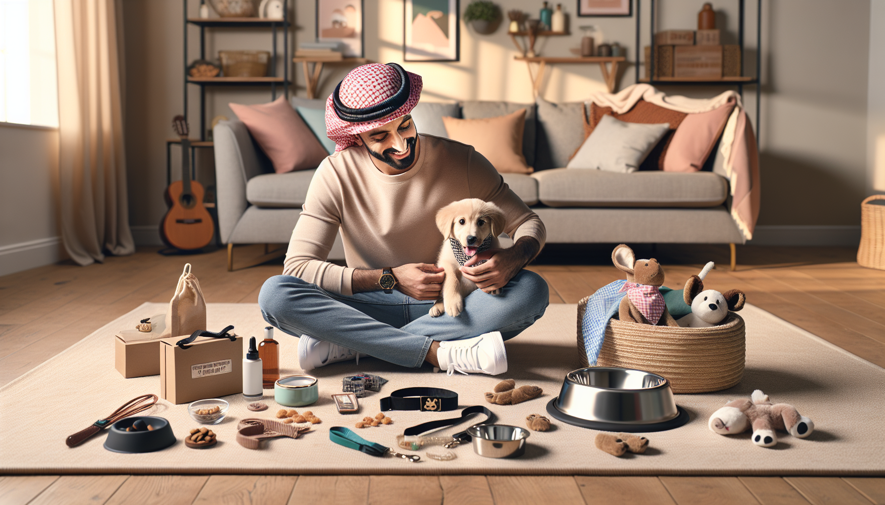

Bringing home a new puppy is one of life’s sweetest milestones. It is exciting, joyful, and yes, a little overwhelming too. Between potty training, late-night whimpers, chew toys scattered across the floor, and figuring out the best food, new puppy owners suddenly have a lot on their plate. That is exactly why thoughtful gifts can mean so much during this stage.
If you are searching for the best gift ideas for new puppy owners, the sweet spot is usually something that is both practical and personal. The ideal gift helps make puppy life easier while also celebrating the adorable new addition to the family. Whether you are shopping for a friend, family member, coworker, or even treating yourself, there are plenty of puppy-themed presents that will get used and appreciated.
In this guide, we are sharing thoughtful, useful, and memorable gift ideas for new puppy owners, from everyday essentials to personalized keepsakes that make puppy parenthood even more special.
Personalized gifts are always a hit, especially for dog lovers. There is something extra meaningful about seeing a new puppy’s name on an item that becomes part of daily life. These gifts feel custom, thoughtful, and made just for the recipient and their furry friend.
Some of the most popular personalized puppy gifts include:
These items are perfect because they blend function with charm. A custom bowl gets used every day, while a personalized blanket can become a cozy comfort item for crate time or naps. If you want a gift that feels unique without being overly complicated, personalized pet accessories are a wonderful place to start.
Sometimes the best gifts are the ones that solve immediate needs. New puppy owners quickly discover how many supplies are needed in those first few weeks. Giving practical essentials can be incredibly helpful, especially if the owner is still building their puppy setup.
Useful puppy essentials include:
These may not sound glamorous at first, but they are the kinds of gifts that get immediate use. A high-quality leash, for example, goes on daily walks. A sturdy bed gives the puppy a safe place to settle in. And chew toys can save shoes, table legs, and couch corners from becoming accidental victims of teething.
If you want your gift to be especially thoughtful, consider combining several practical items into a puppy starter basket. It is useful, adorable, and easy to customize based on the puppy’s size or breed.
The early puppy stage is full of learning, for both the dog and the human. Gifts that support training and comfort can make a huge difference during the adjustment period. New owners often appreciate anything that helps them build routines and keep their puppy calm, safe, and engaged.
Great training and comfort gifts include:
These gifts are especially helpful because they support healthy habits from the start. Puzzle toys and snuffle mats keep puppies mentally occupied, which can reduce boredom-based mischief. Crate accessories help create a more comforting environment for rest and training. For many new dog parents, these tools become part of their everyday routine very quickly.
If you want a gift that feels playful and photo-worthy, matching gifts for the puppy and owner are always a charming option. These gifts are perfect for dog lovers who are fully embracing their new identity as puppy parents.
Fun matching gift ideas include:
These gifts are less about necessity and more about celebrating the bond between pet and person. They are especially great for birthdays, puppy gotcha days, holidays, or baby-shower-style puppy welcome parties. If the new owner loves sharing photos on social media, a coordinated gift can be an instant favorite.
Every new puppy owner quickly learns that puppies are adorable, but they are not always tidy. Muddy paws, little accidents, shedding, and general messes are all part of the package. That is why grooming and cleanup gifts can be surprisingly appreciated.
Helpful grooming and cleanup gift ideas include:
These gifts make daily maintenance easier and help keep both puppy and home feeling fresh. They are not always the first things people think to buy for themselves, which makes them especially useful as gifts. Pairing a few grooming items with a personalized towel or feeding mat can turn practical tools into a polished and thoughtful present.
For many people, bringing home a puppy is a major life event. It is emotional, exciting, and deeply meaningful. Keepsake gifts help capture that moment and turn it into a memory the owner can treasure long after the puppy stage has passed.
Thoughtful keepsake gift ideas include:
Keepsake gifts work especially well if you are shopping for someone sentimental or if the puppy is their first dog. These presents honor the joy of the moment and become meaningful reminders of those tiny paws, floppy ears, and early adventures. Personalized keepsakes also add a heartfelt touch that standard pet store items often cannot match.
With so many options out there, how do you pick the right gift? The best choice usually depends on the owner’s personality, lifestyle, and what stage they are in with their puppy. A little consideration goes a long way.
Here are a few simple tips for choosing the best gift:
If you are unsure, personalized everyday items are usually a safe and thoughtful choice. A custom bowl, bandana, or blanket can feel personal, practical, and easy to love right away.
You can also build a themed gift set around one idea. For example, a mealtime bundle could include a personalized bowl, feeding mat, and treat jar. A comfort bundle might feature a custom blanket, plush toy, and calming accessory. Gift bundles feel generous and carefully curated without needing to be complicated.
When it comes to gift ideas for new puppy owners, the most memorable presents are the ones that make life easier while celebrating the joy of a new best friend. Practical essentials help with the everyday realities of puppy care, while personalized gifts add warmth, charm, and meaning. Whether you choose a custom accessory, a training tool, a grooming item, or a keepsake, your gift can help make the puppy stage even more special.
New puppy owners are navigating a season full of excitement, adjustment, laughter, and love. A thoughtful gift shows that you see that journey and want to celebrate it with them. And for dog lovers, there is almost nothing better than something made just for them and their pup.
If you are ready to find a gift that feels personal, useful, and absolutely adorable, shop personalized pet products at SnoutAndAbout on Etsy.